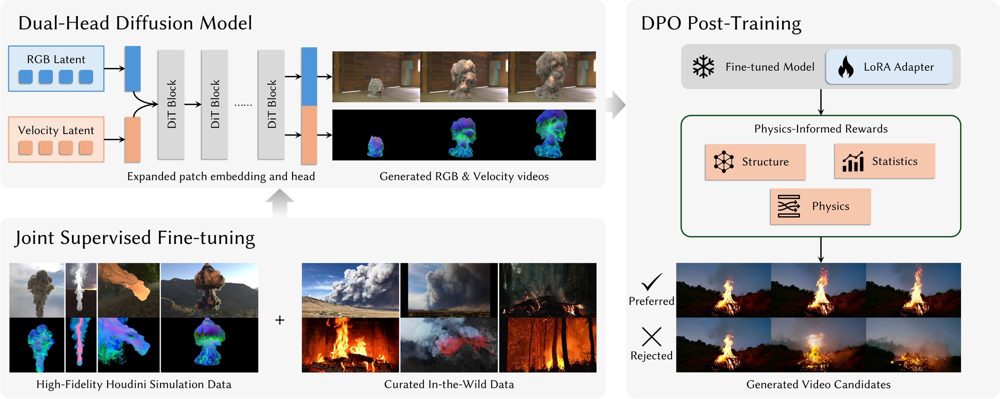

Video generation models produce visually compelling motion but systematically fail on fluid phenomena, including smoke, fire, and explosion debris, where outputs lack coherent vortical structure and collapse to bland dynamics that violate the physics of real fluids. Classical solvers achieve high physical fidelity but require detailed 3D scenes and carefully tuned parameters, making them impractical for in-the-wild imagery and video generation. We address this gap by injecting a data-driven fluid prior into a pre-trained video model, trained on a mixture of high-fidelity Houdini simulation data with paired velocity-field ground truth and curated in-the-wild fluid video data for appearance diversity. The core of our approach is a dual-stream architecture that predicts per-frame velocity fields alongside RGB, supervised by simulation ground truth. This auxiliary signal regularizes generation toward physically consistent motion and exposes an interpretable physical quantity that we further leverage as a reward for velocity-aware direct preference optimization. Our model produces substantially more realistic fluid dynamics sequences than strong video baselines and optimization-based methods.

Per-pixel 3D velocity is encoded as color via spherical coordinates, so it reuses the pretrained VAE.
One shared Wan2.1 denoiser predicts RGB and velocity jointly, with zero-initialized velocity channels.
Joint fine-tuning on simulated and real videos, then DPO with a physics reward computed on predicted velocity.
Guided by keyframes, FluidGen sculpts smoke into animals while keeping the motion physically plausible. Switch between the generated RGB, the generated velocity encoded as color, and the velocity visualized as arrows.
Smoke → Horse
Horse → Cat
Horse → Winged dragon
Same input image and seed. The base model Wan2.1-I2V-14B produces unnatural fluid motion with appearance drift, joint fine-tuning (w/o DPO) makes the dynamics coherent, and DPO adds richer fine-scale detail and more vivid fire and smoke motion.
Given a real captured video as the RGB stream, RePaint-style conditional sampling lets FluidGen infer the matching 3D velocity field. The recovered field shows coherent advection consistent with the observed smoke.
The generated velocity fields are physically meaningful enough to be imported directly into Houdini and used to simulate a new fluid source.
Image-to-video results generated by FluidGen on in-the-wild images of fire, smoke, explosions, and ink.
@article{zheng2026fluidgen,
title = {FluidGen: Physics-Aware Fluid Video Generation via Motion-Guided Post-Training},
author = {Zheng, Yang and Li, Zizhang and Deng, Boyang and Ackermann, Jan and Shu, Lei
and Xu, Yinghao and Wu, Jiajun and Wetzstein, Gordon and Guibas, Leonidas},
journal = {arXiv preprint},
year = {2026}
}